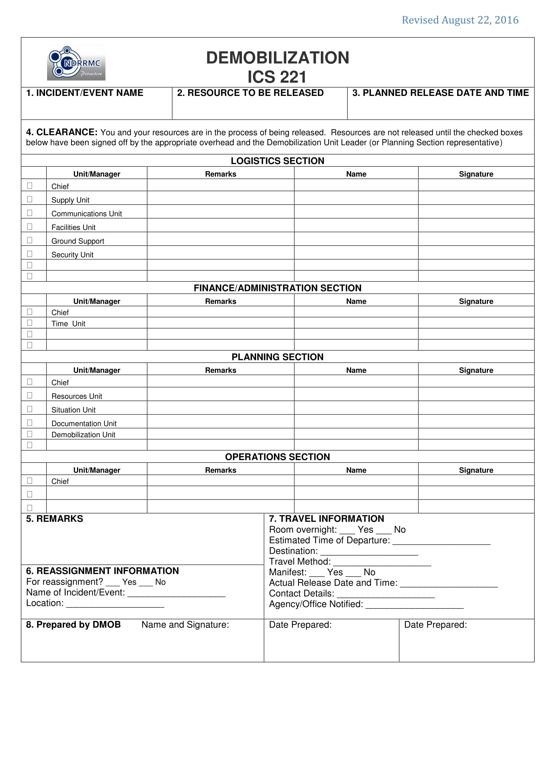

Purpose: The ICS 221 ensures that resources checking out of the incident / event have completed all appropriate business, and provides the Planning Section information on resources released from the incident. Demobilization is a planned process and this form assists with that planning.
Preparation: The ICS 221 is initiated by the Planning Section, or a Demobilization Unit Leader (DMOB) if designated. The DMOB completes the top portion of the form and checks the appropriate boxes in Block 6 that may need attention after the Resources Unit Leader has given written notification that the resource is no longer needed. The individual resource will have the appropriate overhead personnel sign off on any box (es) in Block 4 prior to release from the incident / event.
Distribution: After completion, the ICS 221 is returned to the DMOB or the Planning Section. All completed original forms must be given to the Documentation Unit. Personnel may request to retain a copy of the ICS 221.

BLOCK NO. |
BLOCK TITLE |
INSTRUCTIONS |
| 1 | Incident Name | Indicate the name assigned to the incident / event. |
| 2 | Resource to be Released | Enter the name of individual or resource to be released. |
| 3 | Planned Release Date and Time | Enter the date (mm-dd-yyyy) and time (24 hour format) of the planned release from the incident / event. |
| 4 | Clearance | Resources are not released until the boxes below have been signed off by the appropriate overhead. Blank boxes are provided for any additional unit requirements as needed (e.g., Safety Officer, Agency Representative, etc.). |
| Logistics Section | The DMOB will enter an "X" in the box to the left of those Units requiring the resource to check out. Note: Identified Unit Leaders or other overhead are to sign the appropriate line to indicate release. |
|
| Finance / Administration Section | The DMOB will enter an "X" in the box to the left of those Units requiring the resource to check out. Note: Identified Unit Leaders or other overhead are to sign the appropriate line to indicate release. |
|
| Planning Section | The DMOB will enter an "X" in the box to the left of those Units requiring the resource to check out. Note: Identified Unit Leaders or other overhead are to sign the appropriate line to indicate release. |
|
| Operations Section | The DMOB will enter an "X" in the box to the left of those Units requiring the resource to check out. Note: Identified Unit Leaders or other overhead are to sign the appropriate line to indicate release. |
|
| 5 | Remarks | Enter any additional information pertaining to the demobilization (e.g. transportation requirements). This block may also be used to indicate if a performance rating has been completed as required by the discipline. |
| 6 | Travel Information | Enter the following travel information: |
| Room Overnight | Indicate whether or not the personnel will be staying in a place overnight (e.g. hotel) prior to returning to home base. |
|
| Estimated Time of Departure | Enter the estimated time of departure. |
|
| Destination | Enter the destination. |
|
| Travel Method | Enter the preferred travel method (e.g., land, air, etc). |
|
| Manifest | Enter whether or not the resource or personnel has a manifest. If yes, indicate the manifest number. |
|
| Actual Release Date and Time | Enter the resource’s actual release date and time. |
|
| Contact Details | Enter the resource’s or personnel’s contact details while traveling. |
|
| Agency/Office Notified | Enter the agency/office that was notified of the travel. Also indicate the name of the individual notified, as well as the date and time of notification. |
|
| 7 | Reassignment Information | Enter the following reassignment information. |
| For reassignment? | Indicate whether or not the resource will be transferred to another incident / event. |
|
| Name of incident / Event | Enter the name of the new incident or event. |
|
| Location | Indicate the location or address of the new incident or event. |
|
| 8 | Prepared by DMOB | Enter complete name of the DMOB, signature, date (mm-dd-yyyy), and time (24 hour format) the form was prepared and completed. Note: The form is prepared usually by the DMOB. In the absence of DMOB, it shall be prepared by the PSC. |